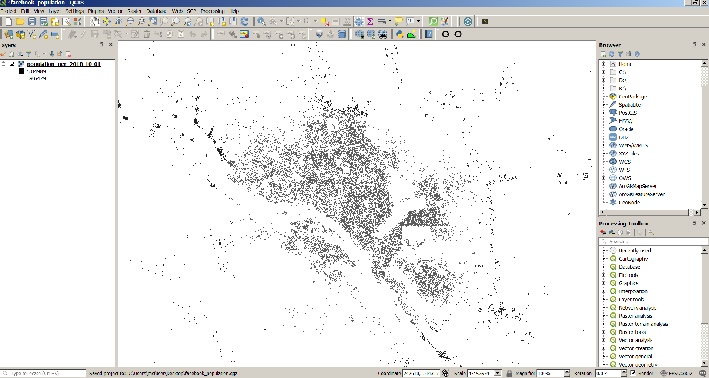
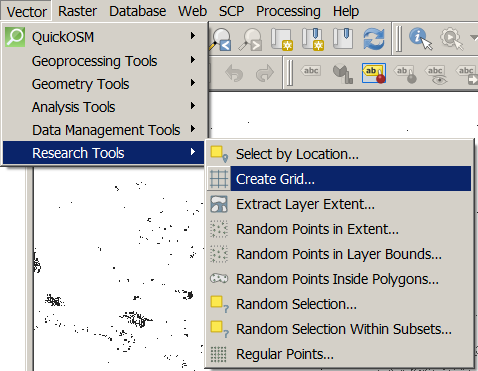
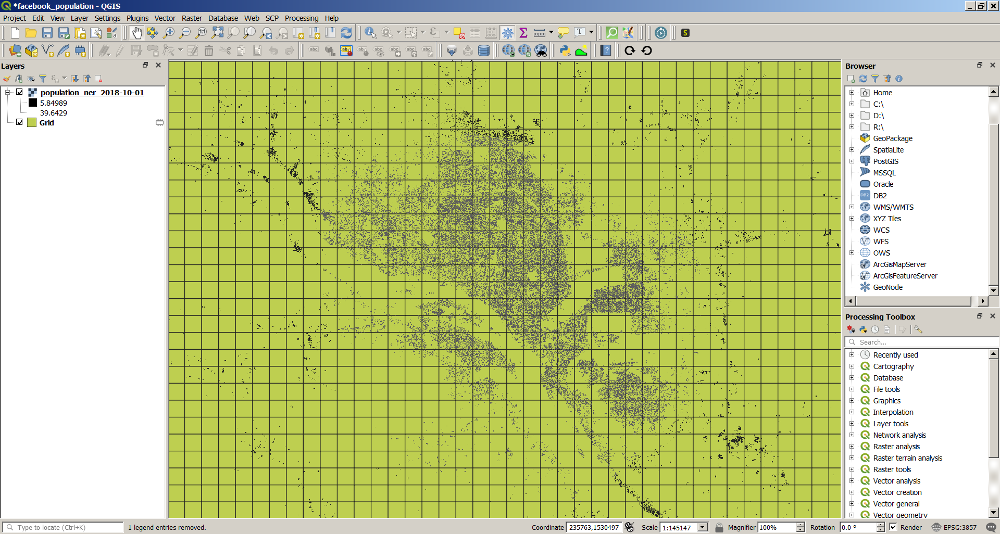
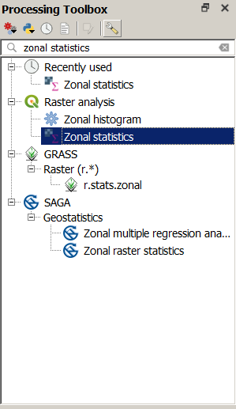
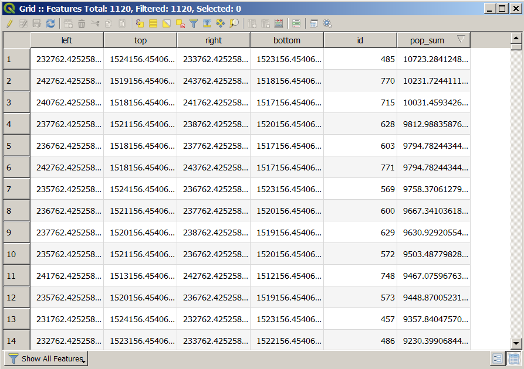
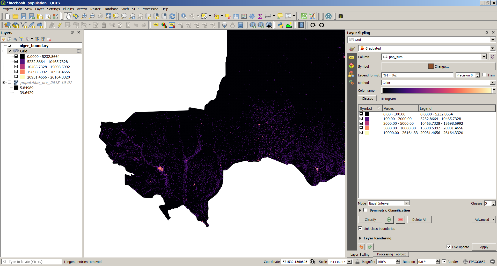
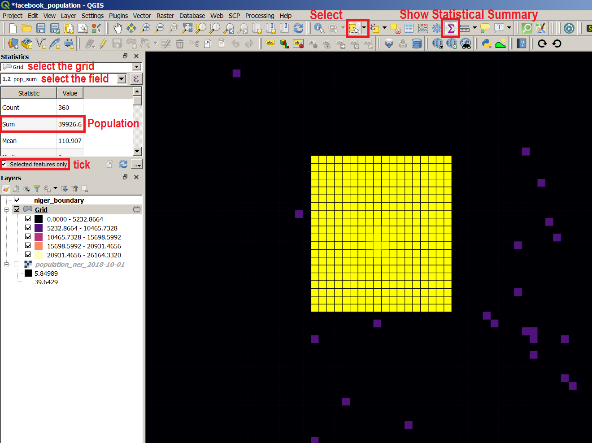

All the datasets can be download on HDX. Search for the country you want and download the zip file.
Open the raster file in QGIS.
Open the tool Create Grid.
Set the parameters:
Result:
In the Toolbox, search for the tool called Zonal Statistics.
Set the parameters:
The tool will create a new column in the attribute table of the grid with the population by square (of one kilometer square in this example).
Use a Graduated symbology to style the layer.
If you want to estimate the population of a specific area, select the corresponding squares of the grid and use Show Statistical Summary.
You can also use a layer of administrative boundaries (regions, districts, neighborhoods etc.) instead of the grid to compute the population for each using the Zonal Statistics tool.